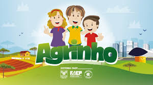

Programa Agrinho
O Programa Agrinho é uma iniciativa brasileira desenvolvida pelo Serviço Nacional de Aprendizagem Rural (SENAR) e pela Federação da Agricultura e Pecuária do Estado do Rio Grande do Sul (FARSUL), em parceria com outras entidades. Seu principal objetivo é promover a educação no campo, incentivando ações que valorizem o meio rural e a sustentabilidade, além de proporcionar conhecimentos sobre agricultura, meio ambiente, saúde, segurança e cidadania.
Principais Caracteristicas
- Educação no Campo
- Integração Escola-Comunidade
- Educação Ambiental e Sustentabilidade
- Educação Alimentar e Nutricional
- Incentivo à Cidadania e Valores Sociais
- Material Didático Específico
- Atividades Extracurriculares e Concursos
Do Campo à Cidade: Uma Jornada de Transformação
O campo e a cidade representam dois mundos distintos, cada um com suas particularidades e contribuições para a sociedade. Enquanto o campo é sinônimo de tranquilidade, contato com a natureza e produção agrícola, a cidade simboliza o dinamismo, a inovação e a diversidade cultural. A vida no campo é marcada pelo ritmo das estações e pelo trabalho árduo na terra. É no campo que se cultiva a maioria dos alimentos que chegam às nossas mesas. Os agricultores desempenham um papel fundamental, garantindo a segurança alimentar e a sustentabilidade. A vida rural também promove um forte senso de comunidade, onde as pessoas se conhecem e se ajudam mutuamente. Por outro lado, a cidade oferece oportunidades variadas, seja no campo do trabalho, da educação ou do lazer. Com infraestrutura mais desenvolvida, as cidades são polos de tecnologia e inovação. É nelas que se concentram universidades, hospitais e centros culturais, proporcionando acesso a serviços e atividades que muitas vezes são inacessíveis no campo. A migração do campo para a cidade, uma tendência observada há décadas, reflete a busca por melhores condições de vida. No entanto, esse movimento traz desafios tanto para o campo quanto para a cidade. O êxodo rural pode levar ao abandono de áreas agrícolas e à perda de conhecimentos tradicionais, enquanto o crescimento urbano desordenado pode resultar em problemas como trânsito, poluição e desigualdade social. É essencial promover um equilíbrio entre esses dois mundos. Iniciativas que incentivam o desenvolvimento rural sustentável e a valorização da vida no campo são fundamentais. Ao mesmo tempo, as cidades devem ser planejadas de forma inclusiva e sustentável, respeitando o meio ambiente e garantindo qualidade de vida para todos os seus habitantes. Portanto, do campo à cidade, cada espaço tem sua importância e contribui de maneira única para a nossa sociedade. Valorizar essa diversidade e trabalhar para integrar esses dois mundos é o caminho para um futuro mais justo e sustentável.
